掌機 - Visual Memory Unit - STM32F103 - 硬體焊接
雖然硬體已經於一年前完成，不過當初並沒有留下太多資料，也沒有好好整理相關文章，因此，趁著最近比較空閒，司徒打算再度利用這個硬體，寫一些程式玩玩，也順便整理相關的教學文章，這才使得司徒重新畫了當初製作的硬體電路圖
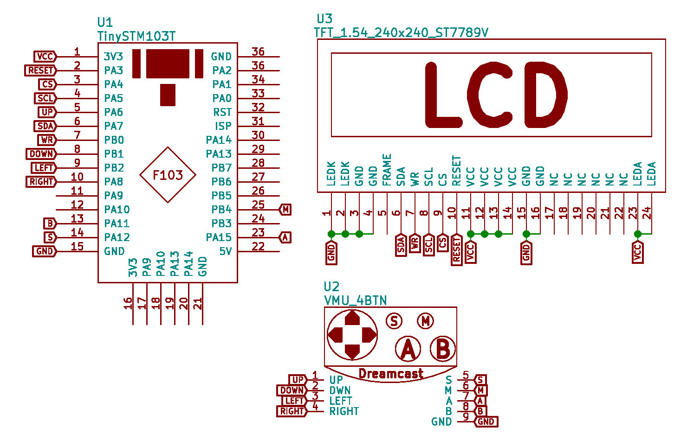
由於使用SPI當作傳輸界面，因此，司徒也不期望掃屏的速度可以達到60FPS，加上受限於VMU的體積，無法安裝大容量的電池，因此，使用強大的CPU就顯得不切實際，雖然目前已經有網友使用Raspberry Pi Zero以及Arduino製作，不過，司徒會更期望CPU可以介於兩者之間，取得一個平衡，因此，最終選擇使用STM32F103當作CPU，看看有無機會利用既有的VMU電池座(CR2032)來改造，而屏幕方面，司徒心目中最佳的解析度為320x240，可惜目前只有找到1.54" 240x240的TFT屏幕，這方面的規格，司徒相信隨著時間，規格會越來越好，之後應該可以使用320x240的IPS屏幕
最初打算使用的屏是OLED 1.5" 128x128解析度
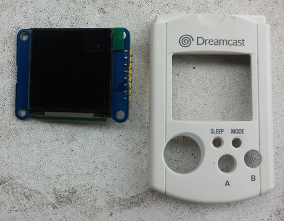
開始裁切
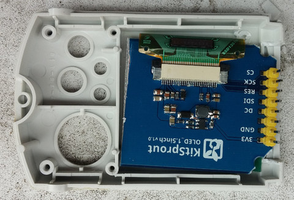
PCB主板
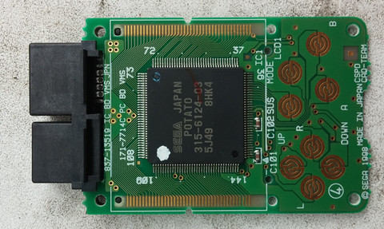
直接裁切原本PCB
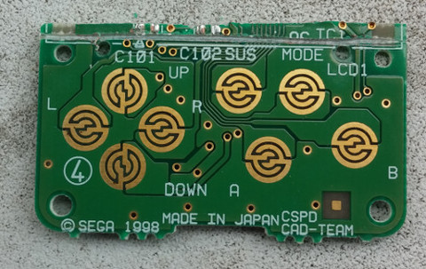
司徒手上最小的STM32F103開發板
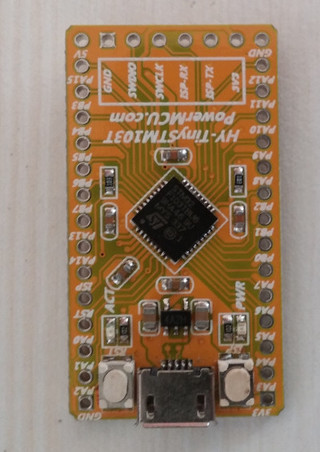
腳位圖
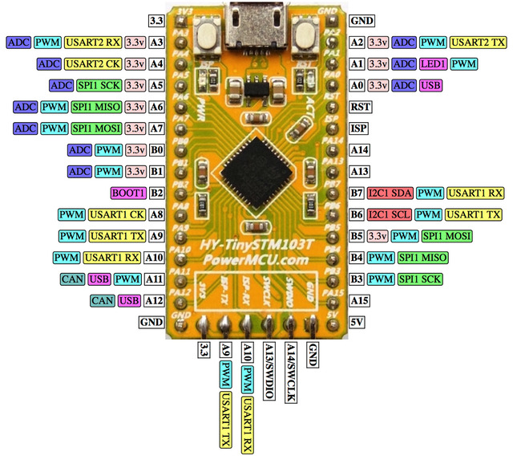
裁切後的屏
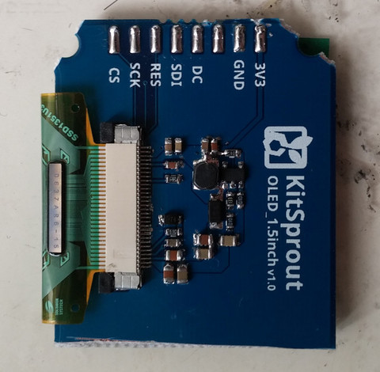
將PCB背面元件解焊，避免不必要的干擾
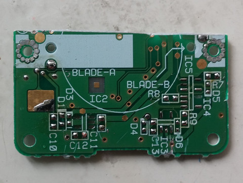
由於之前OLED 1.5"屏的解析度太小，因此，最終換成TFT 1.54" 240x240
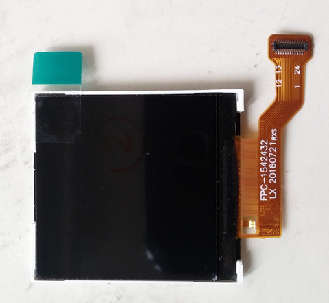
跳線
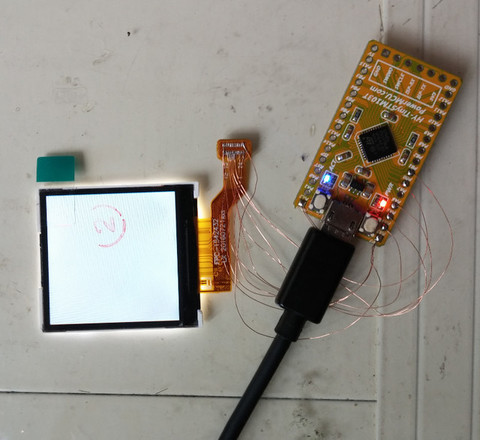
AB膠
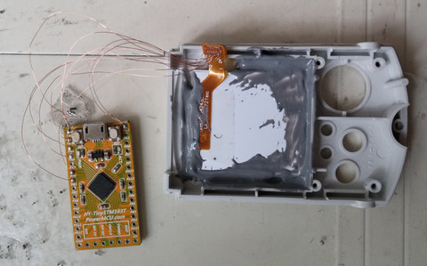
焊點
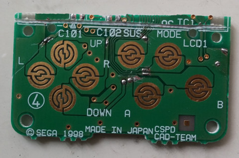
跳線
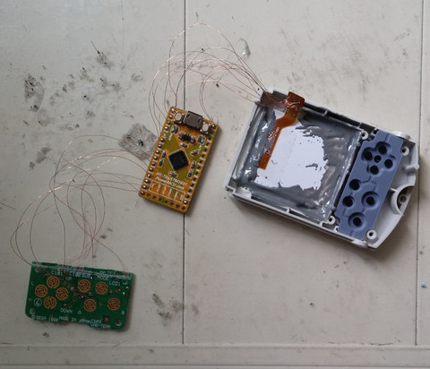
安排適當位置
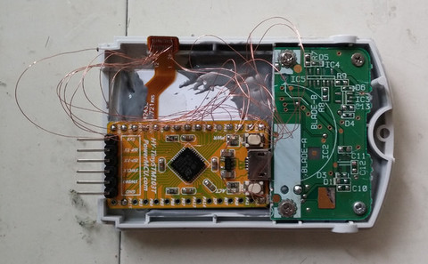
AB膠固定
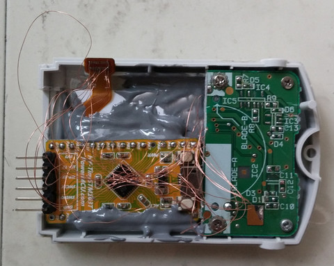
測試是否有短路
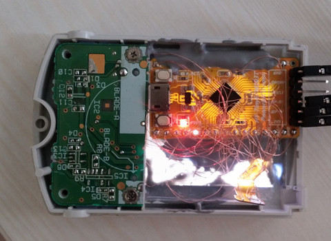
完成
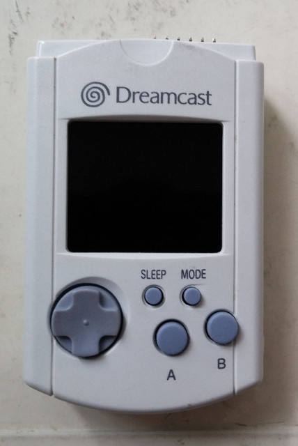
背面
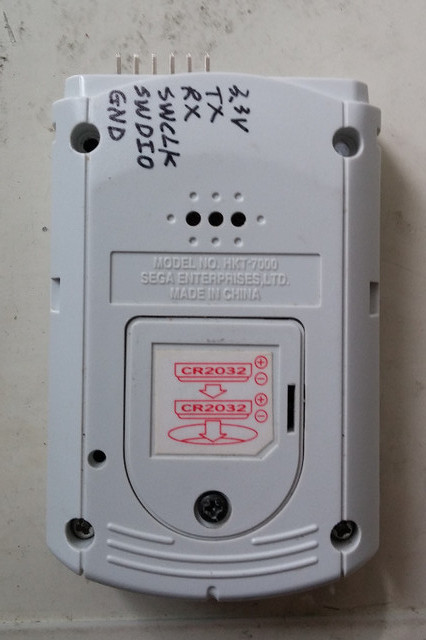